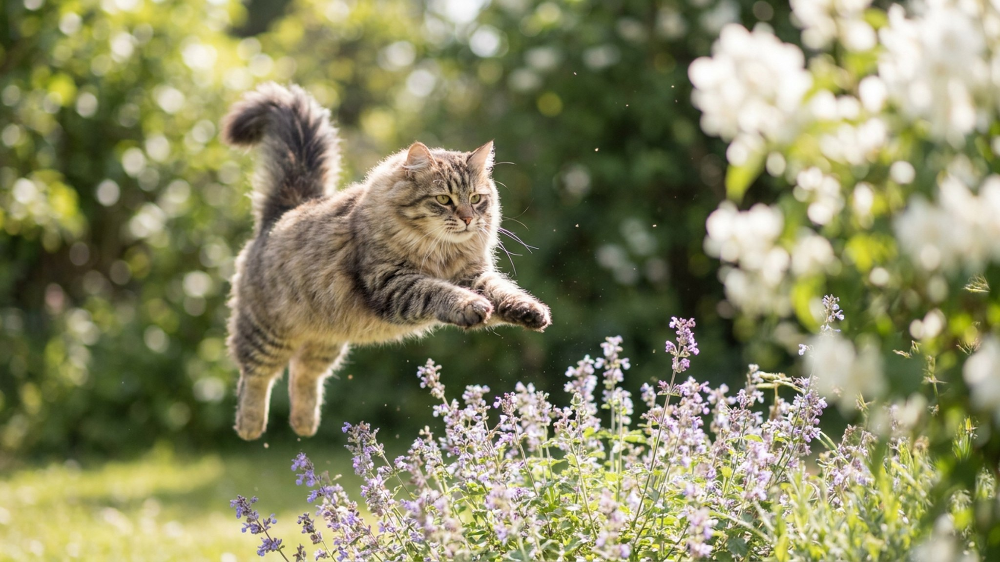

«Сибиряк не вызывает аллергию» — фраза, ради которой породу часто и выбирают. Правда хитрее: дело не в шерсти, а в одном белке, и у сибирской кошки его в среднем меньше — но далеко не у каждой особи. Разберём, на что реально рассчитывать аллергику, какой у сибиряка характер и сколько времени уходит на эту роскошную шубу.
🐾 Первая помощь — всегда под рукой
AnimaLife подскажет, что делать в тревожной ситуации с питомцем ещё до визита к врачу. Откройте в один тап.
Аллергию вызывает не шерсть, а белок Fel d 1 — он содержится в слюне и кожных выделениях кошки, а на шерсть попадает, когда кошка вылизывается. У сибирской породы уровень этого белка в среднем ниже, чем у многих других кошек, поэтому слово «гипоаллергенный» к сибиряку и прилипло.
Но «ниже в среднем» — не «нет совсем». Количество белка у сибирской кошки сильно различается:
Вывод простой: гарантию даёт не порода, а конкретное животное. Перед решением проведите несколько часов рядом с будущим питомцем и понаблюдайте за своей реакцией — это честнее любых обещаний заводчика.
Сибирская кошка — порода-компаньон с крепкой привязанностью к человеку. Она ходит за хозяином по квартире, участвует в делах, но не навязывается и умеет занять себя сама.
У сибирской кошки тройная шерсть с плотным подшёрстком — она защищала предков породы от русских морозов. В быту это означает регулярный уход и две бурные линьки в год — весной и осенью.
Сибирская кошка — для активной семьи, готовой к игре и еженедельному грумингу. Это не декоративная статичная кошка «для интерьера»: ей нужны внимание, движение и вертикальная территория.
А вот рассчитывать на породу как на стопроцентную защиту от аллергии не стоит. Если аллергия в семье есть — решайте вопрос не по названию породы, а по реакции на конкретное животное, и при сомнениях обсудите ситуацию с врачом заранее, а не после переезда котёнка в дом.
Материал носит информационный характер и не заменяет очную консультацию ветеринара.
🐾 Экономьте на лишних визитах к врачу
Сначала спросите AI-ветеринара в AnimaLife — часто этого достаточно, чтобы понять, нужен ли визит к врачу.
🐾 Понравился разбор?
Подпишитесь на канал — каждый день разбираем по одному тревожному симптому у кошек и собак: что в пределах нормы, а когда пора к врачу. Подпишитесь, чтобы не пропустить разбор, который может спасти здоровье вашего питомца.